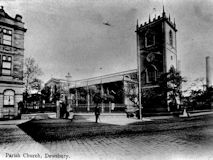

|
St. Peters Chapel in Dallowgill |
It was the summer of 1855, when Christopher Imeson met Sarah Ann Allinson while Sarah Ann was visiting her parents in Mickley, north-west of Ripon. Sarah Ann was returning home from Artlington House where she had worked for several years, while Christopher was visiting from his home at Birkby Nab, before he moved south to the Dewsbury area. They quickly established a relationship together, as they both had something in common; Sarah Ann was a house servant while Christopher was a farm servant.
Christopher Imeson had been born in Masham on April 24, 1829. His parents were Robert Imeson and Elizabeth Wright, who were married May 24, 1828 in Masham. Christopher was their oldest child. By 1851, Christopher was a farm labourer servant living at Birkby Nab, an ancient homestead and farm-house which was a portion of the Studley Royal estate, in the township of Studley Roger, liberty and parish of Ripon; 2 miles from Ripon. It was for many years tenanted by the family of Greaves.
Sarah Ann Allinson had been born in Dallowgill on January 21, 1830. Her parents were John Allinson and Phillis Ashby, who were married November 23, 1826 in Kirkby Malzeard, North Yorkshire. Sarah Ann was baptized on February 3, 1830 at Coltsgate Hill Wesleyan Methodist Church in Ripon, North Yorkshire. In 1832, Sarah Ann’s brother Robert was born in Dallowgill. By 1835, the Allinson family had moved to Boroughbridge, a small village south-east of Ripon. During her family’s stay in Boroughbridge, three more siblings of Sarah Ann were born into the family; Phillis in 1835, Martin in 1837 and Johanna in 1841. By 1851, the Allinson family had moved to Mickley, a village about three miles south-east of Masham. By then, Sarah Ann was a servant in the home of Thomas and Charlotte Harrison at Artlington House in the township of Scriven, just north of Knaresborough.
After Christopher had left for the big city, Sarah Ann soon realized that she was missing Christopher, and wished that she had gone down to Dewsbury with him. By October, Sarah Ann realized that she was pregnant. She confided in her parents, who knew that it was important to deal with the situation as quickly as possible. They contacted Christopher and insisted that he do the right thing, and then made arrangements for their wedding in Dallowgill where Sarah Ann was born. As a result, Christopher Imeson and Sarah Ann Allinson were married December 14, 1855 at St. Peter’s Chapel in Dallowgill. Christopher and Sarah Ann Imeson very quickly took up residence on Peel Street in Batley Carr.
Initially, Christopher’s occupation was as a labourer, but he was soon able to improve their situation with his new occupation as a carter with Joshua Ellis, a Woolen Manufacturer located in Batley Carr. Sarah Ann soon started to show her pregnancy, and wondered why she was gaining weight and size so quickly. She would find out soon enough.
On May 14, 1856, she was ready to give birth to her first child at her home on Peel Street. At 12:30 noon, she gave birth to a daughter. But she soon realized that she wasn’t finished yet, as she gave birth to her second child, a son, at 12:35 noon. She was initially quite relieved that everything had gone so well, until she noticed that her son was having difficulty. Before they could do anything for him, he died after 40 minutes of debility from birth. Sarah Ann was devastated by the death of her son, but she knew that she had to carry on and look after her new baby daughter. They named their daughter Elizabeth after her grandmother. As was the usual practice back then, Christopher transported the body of their son that afternoon to All Saints Churchyard in Dewsbury for burial in the grave of an adult who was being buried that day. On his way home, Christopher stopped at the Dewsbury Registrar’s Office to register the birth of his daughter Elizabeth, as well as the birth and death of their unnamed son.
|
 Dewsbury All Saints Parish Church |
About a week after the birth of their daughter, Sarah Ann noticed that Elizabeth was not well; she seemed to be losing weight instead of gaining. By the time that Elizabeth was nine weeks old, she had wasted away. Elizabeth died of her condition on July 17, 1856. Cause of death was certified as marasmus. Her death was registered on July 18, 1856 at the Dewsbury Registrar’s Office by Christopher Imeson. Her burial would have to wait a couple of more days, until an adult burial was scheduled. Where the parents could not afford a gravesite for an infant, the custom in those days was to include them in the grave of an adult just being buried. She was buried July 20, 1856 at All Saints Churchyard in Dewsbury.
Sarah Ann spent the next few months trying to deal with the sorrow she was feeling. Not only had her son died at birth, but now her daughter had essentially starved to death. With time, Sarah Ann’s mental condition improved, but she would never forget what had happened to her two babies.
By the spring of 1857, the Imeson family had moved to a nearby house on Victoria Road. By then, Sarah Ann was feeling better, and she realized that she was again pregnant. She vowed that this time her baby would have a better fate. The summer went by, and as her pregnancy developed, she looked forward to having a baby to look after. On October 18, 1857 she gave birth to a baby boy, but because he had been born prematurely he only lived two hours. His cause of death was certified as debility from premature birth. The next day, this unnamed baby boy was buried at All Saints Churchyard in Dewsbury. His birth and death were registered at the Dewsbury Registrar’s Office by Christopher Imeson on October 19, 1857.
Again, Sarah Ann was devastated. Now she had given birth and buried three children. She vowed, never again. She blamed herself, even though her husband Christopher told her that it wasn’t her fault. It would be more than a year before she would become pregnant again. Early in 1859, Sarah Ann realized that she was going to have another child. Even though she wasn’t over the death of her first three children, she thought that this new pregnancy would be different, so she focused her attention on the coming birth.
In early September 1859, Sarah Ann gave birth to a son. They named him Robert Wright after Christopher’s parents. But very soon after his birth, Robert became sick. Sarah Ann looked after him the best she could, as medical assistance was not readily available to the poor in those days. His condition continued to deteriorate, and after eight weeks in his short life he died at home on October 31, 1859, despite his mother’s help. The cause of his death was certified as marasmus and diarrhea. Robert Wright’s death was registered at the Dewsbury Registrar’s Office on November 2, 1859 by Sarah Ann Imeson. Robert Wright was buried at All Saints Churchyard on November 3, 1859, similar to his siblings before.
|
Dewsbury County Cemetery Layout |
Sarah Ann had difficulty coming to grips with the death of her son. She blamed herself, but she couldn’t figure out what she should be doing differently. Her depression lasted for several months before she started to feel somewhat better. She just couldn’t forget what had happened to her four children.
Sarah Ann was pleased when her sister Phillis decided to come stay with them soon after Robert Wright’s death. Soon after her arrival, Phillis decided that she wanted to stay, but she would need to find a job, as Christopher and Sarah Ann could not afford to keep her. Christopher was able to make arrangements with his employer, for Phillis to work as a servant at Highfield House at Batley Carr Top for Joshua Ellis, the Woolen Manufacturer. Phillis continued to work there until her marriage in 1864, when she moved to Leeds.
In the late spring of 1861, Sarah Ann realized that she was pregnant again. On one hand she was looking forward to the birth of her child, but she also had visions of her dying children. Sarah Ann’s baby was finally born in November 1861 at her home on Victoria Road. They named him Christopher Wright after his father and his grandmother. For the first few weeks after his birth, things seemed to be going rather well for Sarah Ann’s baby. She thought to herself that this time everything would be different. Her baby was not premature and didn’t show signs of wasting away like some of her earlier children. It didn’t take long until her baby was showing problems with breathing. At four months of age, Christopher Wright died of pneumonia on March 6, 1862. His death was registered the same day by his father, who was home when Christopher died. Christopher Wright was buried two days later at the Dewsbury Cemetery. His parents were able to make arrangements for a private grave plot K229, which was necessary because Dewsbury Churchyard was nearly full, and Dewsbury Cemetery had recently opened back in 1860.
|
Highfield House Batley Carr Top |
Sarah Ann was again devastated by this latest death. Just thinking about this death and the previous deaths made her sick. She just didn’t know why this was happening to her. How could five children in one family die as infants? Surely, it must be her fault. Her depression lasted several months. She decided that she wouldn’t get pregnant again, as she couldn’t go through this again. However, by the autumn of 1862, she realized that she was pregnant for the fifth time. She didn’t want to go ahead with the pregnancy but she didn’t know that there was any other option.
By the early spring of 1863, Sarah Ann was feeling better, and her pregnancy was in its final stages without complications. In mid-March she gave birth to her sixth child, a girl they named Ada Maria. For the first week or two, Ada Maria seemed to be doing quite well, but this soon changed as she began having difficulties. Sarah Ann was not able to nurse Ada Maria back to health; she died April 19, 1863 at her home on Victoria Road. The cause of death was certified as diarrhea and exhaustion. Christopher Imeson was present at her death and the next day registered her death at the Dewsbury Registrar’s Office. Ada Maria was buried April 21, 1863 in plot K229 at the Dewsbury Cemetery, just like her brother had been a year earlier.
|
Dewsbury County Cemetery Section K |
Each time that an infant of Sarah Ann died, she was devastated. Ada Maria’s death was no exception. In those days, it wasn’t that uncommon for an infant to die, but having six infants from one family die was very unusual. Sarah Ann never did get used to her children dying. In order to help herself deal with these infant deaths, she knew that she had to find some way that would commemorate these children’s deaths, so they wouldn’t ever be forgotten.
By the summer of 1863, she knew what she was going to do. She had learned how to long-stitch as a child from her mother, and she decided that she would make a tapestry. She knew that she had to recognize all six children who had died, so she needed a relatively large piece of cloth to work with. Her experience with long-stitch so far was with handkerchiefs, so she had to locate wool that was suitable for a tapestry. Sarah Ann located the wool, and spent the fall and winter working on her tapestry design. She started by working on the border and the background images. She left room for the names, ages and date of death of her six children, as well as verses that she wanted to include.
By the spring of 1864, she realized that she was once again pregnant, so she decided to put her project on hold pending the birth of her seventh child. In November 1864, Sarah Ann gave birth to her daughter, who they named Annie after her mother. During the next winter and spring, Sarah Ann continued to work on the tapestry when she had time, as her new baby kept her busy. Everything was going well, until Annie developed a cold, and then later began having difficulty breathing and had a barking cough. Her condition continued to deteriorate, to the point where she couldn’t breathe at all. Annie died on November 26, 1865 at her home on Victoria Road at age one year. The cause of her death was certified as croup, probably caused by a virus. Her death was registered by Christopher Imeson, who was present at her death, on November 27, 1865 at the Dewsbury Registrar’s Office. She was buried two days later in grave plot K229 at the Dewsbury Cemetery.
|
Dewsbury County Cemetery Plot K229 |
Once again Sarah Ann was devastated by her daughter’s death. She went over and over in her mind that she had given birth to seven children and all of them had died as infants. She knew that she had to complete the tapesrty, so she worked at including the information about her seven who had died, as well as the verse that meant so much to her. By the spring of 1866, she realized that she was once again pregnant, but she decided she would finish the tapestry well before the birth of her child. So in the fall of 1866, she put the finishing touches on the tapestry. She identified who had created it, and when. She then put it aside, focusing her attention on the impending birth of her eighth child.
Sarah Ann gave birth to a baby girl in November 1866. They named her Clara. Everything seemed to be going quite well, so Sarah Ann began to feel better. Clara’s development appeared normal, and after she had her first birthday, Sarah Ann was relieved, because all of her deceased children had died within a few weeks or months, and only Annie had celebrated her first birthday.
By the fall of 1868, Sarah Ann realized that she was pregnant once again. She didn’t now have any concerns, because Clara was nearly two years old, and she felt that the pattern had been broken. In the spring of 1869, Sarah Ann gave birth to a healthy baby boy. They named him Arthur. Now Sarah Ann had two children who were both healthy. As time went on, everything was normal for those days.
Late in the summer of 1871, Clara became sick. Sarah Ann thought, “Not again!” She attempted to nurse Clara back to health, but her symptoms continued to get worse. Clara died September 9, 1871 of her sickness at home on Victoria Road. The cause of death was certified as remittent fever and diarrhea. Christopher registered her death that day at the Dewsbury Registrar’s Office, as he was present at her death. Clara was buried two days later again in plot K229 at Dewsbury Cemetery.
Sarah’s parents had continued to live in Mickley, North Yorkshire, which is about four miles from Dallowgill. When her father John Allinson died in early 1871, Sarah Ann's mother Phillis decided to move down to Dewsbury to live with Sarah Ann and Christopher around 1872. Sarah Ann's mother was able to help her look after Arthur who was about three years old.
Soon after Clara’s death, Sarah Ann realized that she was pregnant again. She continued to look after Arthur, who was nearly three years old. Sarah Ann gave birth to her tenth child, a baby boy, who they named Asa in May 1872. Sarah Ann again had two children to look after, but it wasn’t very long before Asa was having difficulties. He had complications with his teething, which resulted in his death on December 2, 1872 at his home on Victoria Road. The cause of death was certified dentition convulsions. His death was registered by his father, who was present at his death, on the next day at the Dewsbury Registrar’s Office. Asa was buried on December 5, 1872 in plot K229 at the Dewsbury Cemetery.
|
Batley Cemetery Layout |
Sarah Ann was distraught by Asa’s death. In just over a year, two of her children had died, and now she had a total of nine children who had died as infants or as young children and only one had been spared. She decided that it was important to her to add the names of these two latest children on the tapestry. She had a look at the tapestry to see whether there was room for these additional names, as she remembered that she had it nicely spaced out. There wasn’t very much room, but she had to add these names. She wanted to keep the letters the same size for all children, so she found a way to add the names and use abbreviations whenever possible. There was just enough room, so she completed the addition. This made her feel better.
|
Batley Cemetery Section H Plot H701 |
It wasn’t very long before she had other things to help take her mind off her deceased children. By the spring of 1873, she was pregnant again, for the tenth time. In the fall of 1873, Sarah Ann gave birth to her daughter, who they named Amy. Sarah now had two children, Arthur was four and a half years old, and Amy was just a baby.
Over the next five years, Phillis continued to live with Sarah Ann on Victoria Road in Batley Carr. She was able to help Sarah Ann change her luck, as both of Sarah Ann’s children were doing well. At age 73, Sarah Ann’s mother died was buried August 4, 1877 at plot K229 at Dewsbury Cemetery.
Over the next six years, the Imeson Family lived on Victoria Road, Dewsbury. Both children grew and developed normally. When Christopher was only 55 years of age, he had a stroke and died February 14, 1885 at home on Victoria Road. The cause of death was certified as apoplexy. His death was registered by his wife, who was present at his death, two days later. He was buried on February 17, 1885 at plot K229 at Dewsbury Cemetery.
|
Dewsbury_Infirmary (Where Sarah Ann Imeson Died) |
When Christopher died, the family had lived at 61 Victoria Road in Batley Carr. After his death, Sarah Ann had difficulties continuing to live at their longtime house. She had many memories, some of them positive, but many of the memories were of deaths that had occurred at her home over the years. After Christopher’s death, she couldn’t continue to live there, so when there was an opportunity, she moved to 25 Victoria Street.
After they moved, Arthur met Elizabeth Ann Coldwell who lived across the street on Victoria Street. Elizabeth Ann was born in Batley Carr on King Street in early 1869. Her parents were Joseph and Jane Coldwell. Her siblings were Mary Ann, Arthur, Miranda, Drucilla, Eva, Frank and Fred. By 1881, the Coldwell family had moved to 30 Victoria Street in Batley Carr.
Arthur and Elizabeth Ann developed a relationship, but when Elizabeth realized that she was pregnant in the fall of 1889, Arthur agreed that they should get married, which occurred early in 1890 in Dewsbury. Sarah Ann was disappointed that Christopher was not able to attend his son’s wedding, but she and Amy were there to represent the family. Arthur and Elizabeth established their home at 27 Back Barber Street in Dewsbury. Arthur continued to work as a beamer at the local woolen mill.
|
Victoria Road Shop C 1900 |
Elizabeth gave birth to a baby boy in the spring of 1890, who they named Harry. By the early 1891, Harry was sick and he died at age nine months. Harry was buried in the Consecrated Section of Batley County Cemetery in grave H701. He was buried on the February 15, 1891. Arthur wondered whether he and his wife were going to experience the same fate as his parents had.
|
Trinity Church - Batley Carr |
By the spring of 1896, Elizabeth realized that she was pregnant once again. This time things would go better. In the autumn of 1896, Elizabeth gave birth to a baby girl, who they named Elsie. By the autumn of 1897, Elsie became sick and died at age one year. Elsie is buried January 2, 1898 at the Dewsbury Cemetery plot K229. Arthur supported his wife because he knew the effect this had had on his own mother.
By the winter of 1896/97, Sarah Ann’s health had declined, and her children were concerned about her making it through the winter. She was able to last a few months, but on April 28, 1897, Sarah Ann died at 54 Carlton Road, which was at that time the Dewsbury Infirmary. The cause of her death was certified as senile decay and cardiac failure. Her death was registered the same day by Arthur, her son, at the Dewsbury Registrar’s Office. Sarah Ann was buried May 1, 1897 in plot K229 at the Dewsbury Cemetery.
 Dewsbury County Cemetery Section A |
When Arthur was looking after Sarah Ann’s affairs, he came across the tapestry which he had forgotten about over the years. He decided as the oldest son, that he should take ownership and control of the tapestry. Even though it had been nearly 25 years since he had seen it, he remembered his mother explaining why she had created it. While the tapestry had not been specifically cared for over the years, it still was in very good condition. He knew that he had to take it home and look after it.
After her mother’s death, Amy moved to live with her brother Arthur and his wife Elizabeth. Amy had worked as a weaver at a local woolen mill since she was a teenager. She continued to live with her brother, when they moved to 7 Willan’s Road in Dewsbury. By the summer of 1900, Elizabeth realized that she was pregnant again. She was concerned about this pregnancy because she didn’t want to repeat her previous experience. In February 1901, Elizabeth Ann gave birth to her son, who they named Wilfred.
At this time, Amy was preparing to marry James Hillery, whom she had met the previous year. James Hillery was born in the Guisborough area in the summer of 1875, and had moved to Dewsbury as an adult. James’ parents were George and Bessy Hillery. James’ siblings were George, Elizabeth, Thomas and Margaret. Amy and James married in the Trinity Church in Batley Carr on July 1, 1901.
 Alec and Malvina Wedding |
In the spring of 1904, Elizabeth Ann discovered that she was pregnant again. The pregnancy went well over the summer and she gave birth to a baby girl in the autumn of 1904 in Dewsbury. They named her Dorothy.
The Imeson family moved to 10 Upper Road in Batley Carr. In the spring of 1906, Elizabeth realized that she was pregnant once again. Elizabeth gave birth to a baby boy, on October 16, 1906 at her home in Batley Carr. They named him Alec.
All three of Arthur and Elizabeth Ann’s children grew up to adulthood without serious health problems. In early 1928, their daughter Dorothy Imeson married Arthur Dickinson in Dewsbury. His family was from the Dewsbury area. Dorothy and her husband Arthur apparently had no children.
|
James and Amy Hillery Gravestone |
Amy and James Hillery did not have any children. James eventually became the manager of the Coop. They lived at 2 Mitre Street, Dewsbury Moor. At age 59, James Hillery died in Dewsbury on September 12, 1934. He was buried September 15, 1934 in plot A624 at Dewsbury Cemetery.
With the death of her husband, Amy Hillery’s health deteriorated and she died soon after on December 19, 1934 in Dewsbury. Amy was buried December 22, 1934 in plot A624 at Dewsbury Cemetery.
Arthur’s youngest son Alec Imeson married Malvina May Coulson in the spring of 1935 in Bristol. Malvina was born January 5, 1911 in Bristol.
At this time, Arthur and Elizabeth Imeson lived on Mill Road in Batley Carr. On October 24, 1935, Arthur committed suicide in the mill dam where he was a foreman. The inquest concluded that he had committed suicide while in a fit of depression owing to ill-health. Arthur was buried on October 26, 1935 in plot A624 at Dewsbury Cemetery.
Soon after his father’s death, Wilfred decided to immigrate to South Africa. He apparently spent his remaining years in South Africa.
 Malvina, Alec & Elizabeth Ann Imeson |
After her husband’s death, Elizabeth decided to move to the Bristol area, in order to be closer to her youngest son Alec and his new wife. During the move, Elizabeth Ann had come across the tapestry, and had decided that she should pass it on to her son. Its condition had deteriorated over the years since his father had taken possession of it. Elizabeth Ann had to explain the significance of the tapestry, because Alec hadn’t remembered ever having seen it over the years. Alec accepted the tapestry, but decided to put it away in a drawer until he had time to look at it in detail. Elizabeth Imeson died early in 1947 at age 78 in Clevedon, Somerset.
Alec and Malvina May continued to live in the Bristol area. They decided that they didn’t want children, and as a result, they didn’t have any. Alec Imeson died in the autumn of 1964. His death was registered in Bristol. Malvina May Imeson died in the spring of 1976. Her death was registered in Bristol.